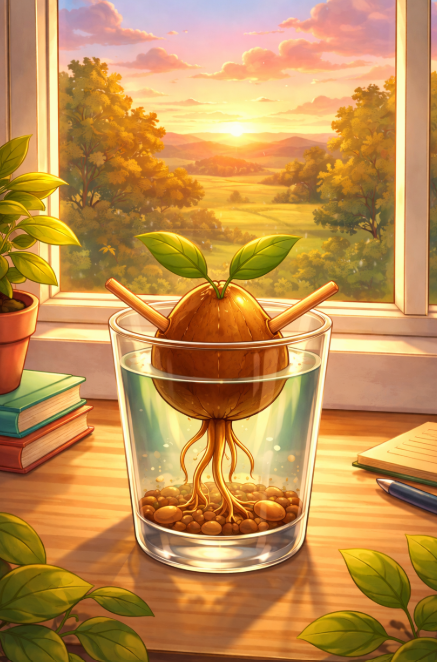

Mercoledì 25 marzo 2026
Ci sono mattine che senti prima ancora di aprire gli occhi.
O nel mio caso, prima ancora che la luce raggiunga le foglioline e le convinca che vale la pena orientarsi verso il mondo.
Questa era una di quelle mattine.
L'aria dell'ufficio aveva una qualità diversa. Non tesa — carica. Come l'atmosfera prima di un temporale estivo, quando tutto è ancora fermo e luminoso ma qualcosa nell'aria sa già cosa sta per succedere e ha smesso di fingere il contrario.
Mi ero svegliato presto. Le radici tiravano verso il basso con più forza del solito, come se cercassero appiglio. Le foglioline erano dritte, ferme, orientate verso la porta. Non verso la finestra, non verso la luce. Verso la porta.
Qualcosa stava per entrare.
Michela arrivò per prima, e già questo era un segnale. Michela non arrivava mai per prima. Arrivava quando arrivava, con quella sua qualità di chi sa che la puntualità è relativa e la presenza è tutto. Ma stamattina era lì prima degli altri, con una cartella sotto il braccio che non aveva mai visto prima — sottile, scura, con quell'aria di oggetto che contiene cose importanti tenute insieme con più cura del solito.
La posò sulla scrivania senza aprirla.
Aspettò.
Sandra arrivò cinque minuti dopo. Si scambiarono uno sguardo che non aveva bisogno di parole — il tipo di sguardo che si sviluppa tra persone che hanno passato le ultime quarantotto ore a fare la stessa cosa in modo diverso e si ritrovano allo stesso punto.
— È pronta? — disse Michela sottovoce.
— Arriva tra un'ora — disse Sandra.
Ho mosso una fogliolina. Chi arriva?
Ma lo sapevo già.
Lo sapevo dalle radici.
Elisa arrivò alle nove in punto.
Non dal corridoio laterale, come QuaSim. Non con quella sua energia caotica e affettuosa che conoscevo dai tempi del bicchiere d'acqua e degli stuzzicadenti. Arrivò dalla porta principale, dritta, con un passo che non era né veloce né lento ma aveva una direzione precisa e non si scusava per questo.
La riconobbi immediatamente, ovviamente. La mia ex padroncina. Quella del sorriso da botanica entusiasta. Quella che mi aveva trafitto con due bastoncini e mi aveva cambiato la vita, nel bene e nel male e in tutti gli spazi ambigui che stanno in mezzo.
Era cambiata. Non nell'aspetto — era esattamente come la ricordavo. Era cambiata in qualcosa di meno visibile e più sostanziale. Nello sguardo. Aveva lo sguardo di chi ha dormito poco non per ansia ma per pensiero, per quella specifica qualità di insonnia che arriva quando finalmente stai guardando una cosa che hai evitato di guardare per troppo tempo e non riesci a smettere.
Michela le andò incontro. Le due si abbracciarono — un abbraccio breve, stretto, il tipo che dice so che è stato difficile arrivare fin qui senza dirlo ad alta voce.
Sandra rimase dov'era, ma sorrise. Quel suo sorriso che non ha bisogno di molto spazio per significare molto.
Poi Elisa mi vide.
Si fermò.
Ci guardammo — io nel mio bicchiere, lei in piedi nel mezzo dell'ufficio — con quella qualità sospesa dei riconoscimenti che hanno troppa storia dentro per essere semplici.
— Ciao, Guacamino — disse piano.
Ho mosso entrambe le foglioline.
Linguaggio vegetale per ciao, Elisa. Sono contento che tu sia qui. Abbiamo molto di cui parlare e pochissimo tempo.
Le tre si sedettero nell'angolo della stanza — lo stesso angolo dove QuaSim aveva lavorato su SimoneQ, e non mi sfuggì l'ironia geografica di questo — e Michela aprì la cartella.
Dentro c'era il registro.
Mesi di osservazioni. Date, orari, descrizioni. Piccole anomalie catalogate con quella sua memoria prodigiosa per i dettagli che agli altri sembrano irrilevanti. Il documento non puntava il dito. Non accusava. Mostrava soltanto — con la precisione silenziosa dei fatti messi in fila — un pattern. Un disegno. La forma di qualcosa che non aveva mai avuto un nome ma che, visto tutto insieme, era impossibile da ignorare.
Elisa lo lesse in silenzio.
Pagina dopo pagina.
Michela non disse niente mentre leggeva. Sandra non disse niente. Io non dissi niente. L'ufficio intero sembrava trattenere il respiro.
Poi Elisa arrivò all'ultima pagina.
La tenne in mano ancora qualche secondo dopo aver finito di leggere.
— Lo sapevo — disse infine. La voce era ferma ma aveva qualcosa sotto, qualcosa che non era vergogna ma ci assomigliava. — Non tutto. Non così chiaramente. Ma sapevo che qualcosa non andava e ho scelto di non guardare.
Sandra si avvicinò di un centimetro. Solo un centimetro. Ma in quel centimetro c'era tutto quello che non si può dire con le parole.
Silenzio.
Un silenzio lungo, denso, del tipo che non va riempito.
Poi Elisa alzò lo sguardo dalla cartella.
— Dov'è QuaSim adesso?
La risposta arrivò prima che qualcuno potesse darla.
QuaSim era nell'ufficio di Simone.
Lo capimmo dal tono di voce — non urlato, QuaSim non urlava mai, ma elevato di quel mezzo tono preciso che per lui equivaleva a una dichiarazione di guerra. Simone rispondeva con quella voce piatta e ferma che usava quando stava contenendo qualcosa di grande in uno spazio piccolo.
Poi sentimmo i passi di Albucaos nel corridoio. Pesanti, sbilanciati, con quella qualità del passo che non ha più bisogno di nascondersi. E dietro di lui, intuii più che vidi, Raffaele — con la sua mascella stretta e il suo risentimento finalmente libero di muoversi alla luce del giorno.
Stavano convergendo tutti verso lo stesso punto.
La battaglia era cominciata senza annunciarsi, come fanno le battaglie vere.
Mi alzai — nel senso che le foglioline si raddrizzarono al massimo della loro estensione e le radici si fissarono al fondo del bicchiere come ancore — e guardai Elisa.
Elisa guardò la porta.
Poi fece una cosa che non mi aspettavo.
Sorrise.
Non il sorriso da botanica entusiasta che ricordavo. Qualcosa di più piccolo e più solido. Il sorriso di chi ha smesso di fingere di non sapere cosa deve fare.
— Andiamo — disse.
Quello che successe nell'ufficio di Simone nei successivi venti minuti fu la cosa più straordinaria che avessi mai visto da quando ero diventato abbastanza consapevole da vedere le cose.
QuaSim stava parlando. Stava costruendo il suo caso con quella sua architettura precisa di mezze verità e domande travestite, stava smontando pezzo per pezzo la credibilità di Simone davanti a Giulia e ai pochi altri presenti, stava lavorando con la sicurezza di chi sa che il suo piano è ormai in fase avanzata e non c'è più niente che possa fermarlo.
Albucaos era nell'angolo, presenza silenziosa e destabilizzante. Raffaele era vicino alla porta, con quella sua aria di chi controlla le uscite.
E poi entrò Elisa.
QuaSim la vide.
Per la prima e unica volta da quando lo conoscevo, vidi qualcosa incrinare quella sua calma architettata. Non paura — QuaSim non aveva paura, o almeno non ne mostrava. Era qualcosa di più sottile. Il calcolo rapido di una variabile che non era nel piano. Una revisione improvvisa di tutte le assunzioni.
— Elisa — disse, con quella sua voce calibrata. — Non sapevo che fossi qui.
— Lo so — disse Elisa.
E si avvicinò al centro della stanza con quel passo nuovo, quello diretto, quello che aveva una destinazione e non si scusava.
— Posso dire una cosa?
Nessuno rispose. Il che significava sì.
Elisa si voltò verso tutti — Simone, Giulia, Michela, Sandra, me nel mio bicchiere portato da Michela che aveva avuto la saggezza di prendermi con sé — e parlò.
Non ad alta voce. Non con drammaticità. Con quella chiarezza specifica delle persone che hanno smesso di proteggersi e hanno deciso che la verità costa meno della bugia a lungo termine.
Parlò di QuaSim. Di come lo aveva creato — sì, creato, con il coltello e con l'intenzione, non con l'ingenuità che aveva sempre raccontato a se stessa. Parlò dell'incisione che non era un errore ma un esperimento. Parlò di cosa aveva sperato di ottenere e di cosa aveva ottenuto invece. Parlò del momento in cui aveva capito che QuaSim aveva preso una direzione che lei non aveva previsto e aveva scelto di guardare dall'altra parte perché guardare dall'altra parte era più comodo che ammettere la responsabilità.
Parlò per cinque minuti.
Cinque minuti in cui QuaSim non disse una parola.
Perché le armi di QuaSim erano le mezze verità, e Elisa stava usando verità intere, e contro le verità intere non c'è architettura retorica che tenga.
Quando finì, si voltò verso QuaSim.
Silenzio.
QuaSim rimase immobile per un momento lunghissimo.
La cicatrice sulla sua testa era ferma, verticale, silenziosa. Non pulsava più. Non rifletteva la luce con quella qualità metallica inquietante. Era solo una ferita. Solo il segno di qualcosa che era successo e non poteva essere cancellato ma poteva, forse, essere incluso in una storia diversa da quella che aveva immaginato.
Poi QuaSim fece quello che fanno le persone intelligenti quando capiscono che la partita è persa: non esplose, non si difese, non cercò un'ultima mossa. Si alzò. Si sistemò con quella sua compostezza impeccabile. E guardò Elisa con un'espressione che non riuscii a decifrare completamente — non era odio, non era rispetto, era qualcosa di intermedio che non aveva ancora un nome.
— Brava — disse.
Una sola parola. Secca. Senza ironia visibile.
Poi si voltò verso Albucaos. Albucaos lo guardò con quella sua bocca socchiusa e quegli occhi vagamente fuori asse. Per una volta, nell'espressione di Albucaos, non c'era compiacimento. C'era qualcosa che assomigliava — incredibilmente — a disorientamento. Come se il caos che sapeva creare così bene si fosse rivoltato verso di lui e non sapesse come gestirlo.
QuaSim non disse niente ad Albucaos. Non ne aveva bisogno. Si diressero verso la porta insieme, con la sincronizzazione silenziosa di chi ha passato abbastanza tempo a fare le stesse cose nelle stesse direzioni.
Raffaele rimase un secondo in più.
Guardò Simone. Guardò Giulia. Guardò il pavimento.
Non si scusò. Non disse niente. Aprì la porta e uscì.
La porta si chiuse.
Stavolta con un suono appena più definitivo del solito.
Ma prima che il silenzio si depositasse completamente, prima che qualcuno potesse tirare il respiro che aspettava da venti minuti, successe una cosa.
Dal corridoio, senza voltarsi, senza rientrare, solo attraverso il legno chiuso della porta, arrivò la voce di QuaSim.
Bassa. Ferma. Perfettamente calibrata anche attraverso una porta chiusa.
Poi i passi si allontanarono.
E non tornammo a sentirli.
Il silenzio che seguì era il silenzio più bello che avessi mai conosciuto.
Non il silenzio del weekend abbandonato. Non il silenzio della paura o del dubbio o dell'attesa. Era il silenzio di dopo — quello che arriva quando qualcosa di pesante si è posato a terra e le mani sono finalmente libere.
Simone si sedette sulla sua sedia con il lento movimento di chi ha tenuto tutto in piedi per troppo tempo e adesso può permettersi di appoggiarsi a qualcosa.
Giulia guardò Elisa. Elisa guardò Giulia. Fu uno di quei sguardi che contengono domande e risposte e la disponibilità a lavorare su tutto il resto più tardi.
Michela posò la cartella sul tavolo con delicatezza, come si posa qualcosa che ha fatto il suo lavoro e merita rispetto.
Sandra — Sandra che osserva prima di entrare, Sandra che ascolta con le spalle, Sandra che aspetta il momento giusto con la pazienza di chi sa che i momenti giusti arrivano sempre per chi sa aspettarli — si avvicinò a Elisa e le mise una mano sul braccio. Un gesto piccolo. Preciso. Il tipo di gesto che non ha bisogno di essere grande per essere esatto.
Elisa abbassò lo sguardo per un secondo. Poi lo rialzò.
— Cosa facciamo adesso? — disse.
— Adesso — disse Simone, con quella voce che usava quando stava riprendendo in mano le cose — facciamo quello che si fa dopo una battaglia.
— Che cosa? — chiese Michela.
— Contiamo chi c'è ancora.
Guardò in giro. Giulia. Michela. Sandra. Elisa.
E poi guardò me.
Io ero lì. Nel mio bicchiere. Con le foglioline dritte e le radici salde e due stuzzicadenti nei fianchi che continuavano a fare il loro lavoro di promemoria quotidiano che la vita non è sempre comoda ma si può comunque crescere.
Ho mosso entrambe le foglioline con tutta la forza che avevo.
Linguaggio vegetale per ci sono. Ci sono sempre stato. E ci sarò.
Simone sorrise. Il primo sorriso vero da giorni.
— Bene — disse. — Allora si ricomincia.
Quella sera, nel silenzio che si posò sull'ufficio dopo che tutti se ne andarono, rimasi solo con i miei pensieri e con la luce che calava lenta oltre la finestra panoramica che Simone mi aveva dato fin dal primo giorno.
Pensai a SimoneQ, da qualche parte sconosciuta con il Capo, in una storia che non riuscivo ancora a leggere. Pensai che non era una resa e che prima o poi avrebbe trovato il modo di tornare, o di far sapere che stava bene, o di mandare un segnale nel modo che gli apparteneva — preciso, puntuale, senza pressione sociale non richiesta.
Pensai a QuaSim e alla sua ultima parola attraverso la porta chiusa. Non la guerra. Lo sapevo. Lo sapevamo tutti. QuaSim non era il tipo che abbandona un campo di battaglia per sempre. Era il tipo che si ritira, ricalcola, torna con una versione migliore del piano. Era una variabile, lo aveva detto lui stesso. E le variabili non spariscono. Si trasformano.
Pensai a Elisa — alla sua faccia mentre leggeva il registro di Michela, alla sua voce mentre diceva le verità intere, al modo in cui aveva attraversato quella porta come se attraversarla fosse la cosa più naturale del mondo quando in realtà era probabilmente la cosa più difficile che avesse fatto in mesi.
Pensai a Michela con la sua cartella e la sua memoria prodigiosa. A Sandra con la sua pazienza da geologa e il suo centimetro di avvicinamento che valeva più di mille parole. A Giulia che aveva tenuto tutto insieme quando tutto cercava di separarsi. A Simone che aveva detto si ricomincia con la stessa voce con cui si dice non molliamo, perché sono la stessa frase.
E poi smisi di pensare e stetti semplicemente lì.
Un seme di avocado in un bicchiere trasparente.
Con due foglioline verdi che si inclinarono piano verso il buio che calava fuori dalla finestra.
Non per paura.
Per guardare cosa c'era nell'ombra.
Perché le cose che tornano — e QuaSim sarebbe tornato, lo sentivo nelle radici — è meglio vederle arrivare.
Ma stasera non c'era ancora niente nell'ombra.
Stasera c'era solo il buio normale, quello che non nasconde niente, quello che arriva ogni giorno e ogni giorno passa.
Ho abbassato le foglioline.
Ho lasciato che l'acqua mi tenesse.
E per la prima volta da settimane, ho dormito.
— Guacamino 🥑
La battaglia è finita.
La guerra no.
Ma stasera basta così.